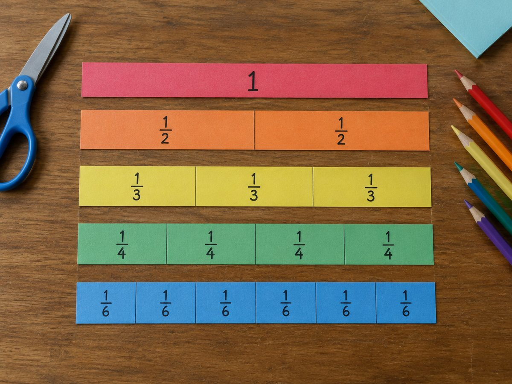

전체 단원 › 실험·활동 › 5~6학년 수학
종이 분수 막대로 통분하기

같은 길이의 종이 막대를 2, 3, 4, 6, 8, 12조각으로 나눠 놓고, 분모가 다른 분수를 더할 때 왜 통분이 필요한지 눈으로 확인해요.
만들기 20분 · 놀이 30분 · 난이도 ★★☆ 보통
준비물
- 분수 막대 도안 — 1, 1/2, 1/3, 1/4, 1/6, 1/8, 1/12 막대 (A4 1장)
- 가위, 색연필 — 막대마다 다른 색으로 칠해요
- 봉투나 지퍼백 — 조각을 보관해요
하는 방법
- 색칠하고 자르기
막대마다 한 가지 색으로 칠한 뒤, 맨 위 '1' 막대만 그대로 두고 나머지는 칸마다 잘라 조각으로 만들어요. - 같은 크기 찾기
1/2 조각 1개와 길이가 같은 조각 묶음을 찾아요. 2/4, 3/6, 4/8, 6/12. 크기가 같은 분수예요. - 1/2 + 1/3 놓아 보기
1 막대 아래에 1/2 조각과 1/3 조각을 이어 놓아요. 이 길이를 한 종류의 조각으로만 덮을 수 있을까요? - 통분 찾기
1/6 조각으로 덮으면 딱 5개가 맞아요. 1/2 = 3/6, 1/3 = 2/6이니까 1/2 + 1/3 = 5/6. - 뺄셈도 해 보기
3/4 위에 1/3을 겹쳐 놓고 남은 길이를 1/12 조각으로 재요. 3/4 − 1/3 = 9/12 − 4/12 = 5/12. - 식으로 정리하기
조각으로 찾은 답을 기록지에 식으로 써요. 공통분모가 두 분모의 공배수라는 것을 확인해요.
생각해 봐요
- 1/3과 1/4을 같은 조각으로 나타내려면 어떤 조각이 필요할까요?
- 공통분모로 왜 두 분모의 공배수를 쓸까요?
- 1/2 + 1/3이 2/5가 아닌 이유를 막대로 설명할 수 있나요?
왜 그럴까?
분모가 다른 분수는 조각의 크기가 달라서 바로 더할 수 없어요. 그래서 두 분수를 같은 크기의 조각으로 바꿔 줘요. 이걸 통분이라고 해요. 1/2과 1/3은 둘 다 1/6 조각으로 바꿀 수 있어서 3/6 + 2/6 = 5/6이 돼요.